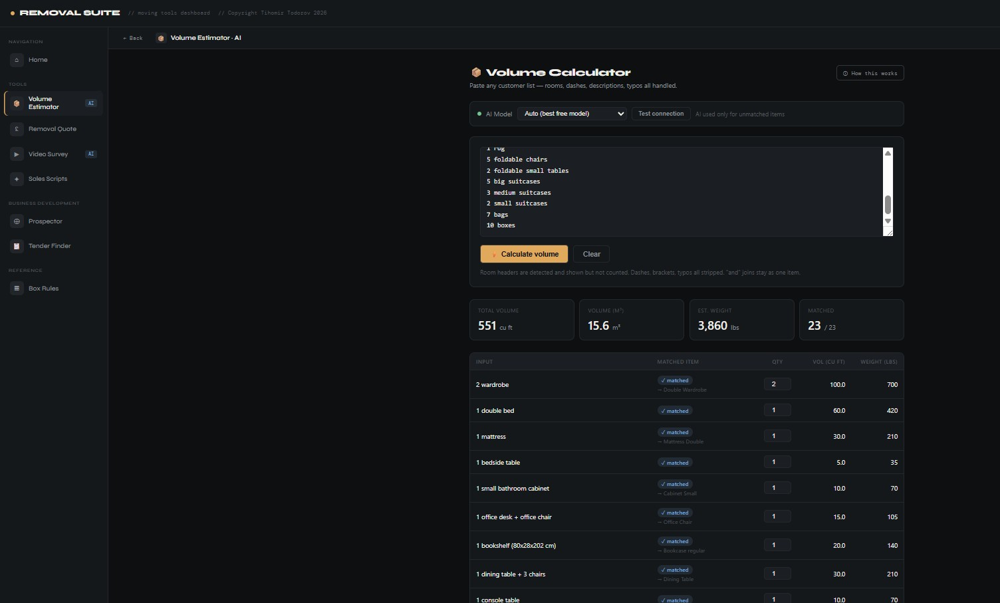
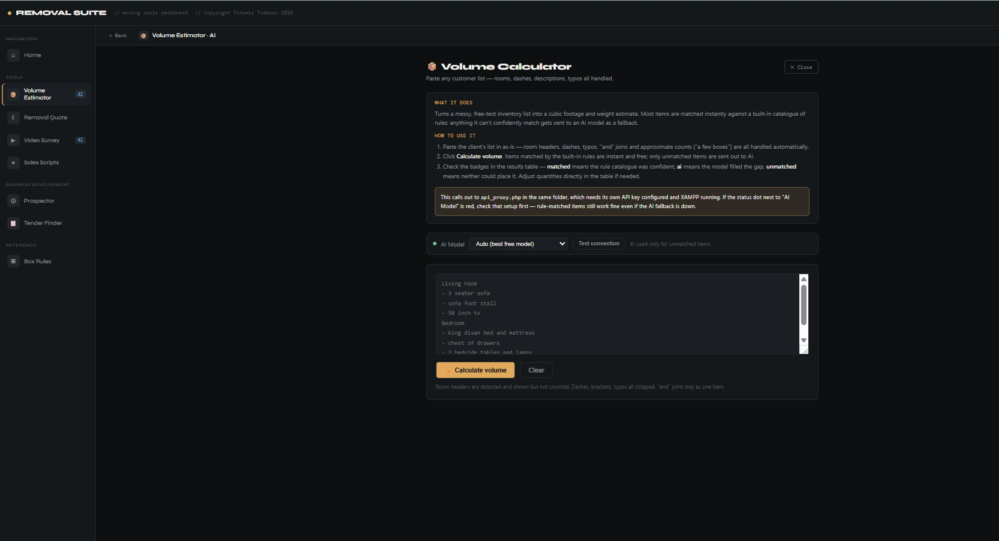

Pricing & Quoting
A quote could take up to twenty minutes and came out differently depending on who wrote it. I worked out the pricing rules the business already used and built them into software. I didn't invent a new pricing model. I made the existing one consistent.
How it flows
A quote took anywhere from ten to twenty minutes to put together, and the price depended on which surveyor wrote it. In a market where the quickest, most consistent quote often wins the job, that cost us. We lost jobs to faster competitors, and we risked our margins by quoting too low or too high.
I didn't want to invent a new pricing model. The business already had years of pricing knowledge in staff costs, fuel, vehicle profit margins, packing material prices and van capacity rules. It just lived in individual surveyors' heads instead of in a system. I wanted to work that logic out from real jobs and build it in as it was, so every quote reflected the same judgement whoever produced it.
It's a web app that runs in the browser. You upload a docx survey, a local AI model pulls out the inventory room by room, and a pricing engine built from real past jobs does the rest, covering staff costs, fuel, vehicle profit, packing materials and van capacity. A companion Volume Calculator turns the inventory into cubic footage. It matches item descriptions against a catalogue of hundreds of standard furniture items using fixed rules first, and only asks an AI model about the few items the rules can't confidently match. That keeps the AI cost and delay for the odd cases instead of every line.
I put rules first and AI second in the Volume Calculator to keep it cheap and quick. Most items match the catalogue cleanly, and only ambiguous or badly typed entries go to an AI model, which falls back to another model automatically if one is rate-limited. I built the pricing logic by studying real completed jobs instead of starting from a theoretical formula, so the tool had to cope with how messy real quotes are.
Quote preparation dropped from roughly ten to twenty minutes to under one minute for a standard survey, and the pricing logic is the same whoever runs it. The salesperson still checks and signs off every quote. The tool takes away the repetitive work, not the judgement.
Taking away internal friction gives you more time to sell. The main win wasn't a cleverer pricing model. It was giving surveyors back the twenty minutes per quote they used to spend on arithmetic. I also learned that building in expertise the business already has is often worth more than redesigning it from scratch.
Engineering Decisions
In the Field


Next